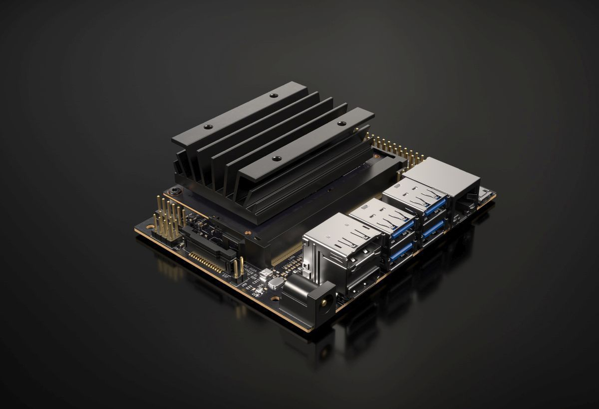
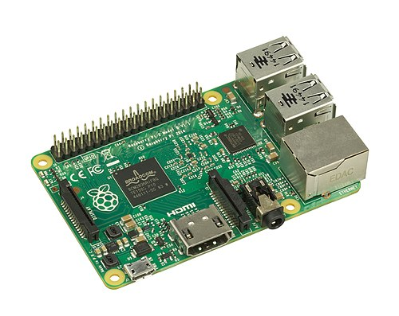

La veille technologique, élément de la veille stratégique, consiste à surveiller les évolutions techniques, les innovations dans un secteur d’activité donnée. La veille technologique comprend notamment la surveillance, la collecte, le partage et la diffusion d’information permettant d’anticiper ou de s’informer sur des changements en matière de recherche, développement, brevet, lancement de nouveaux produits, matériaux, processus, concepts, innovation de fabrication, etc…. Cela a pour but d’évaluer l’impact sur l’environnement et l’organisation.
Le but de la veille technologique comme dit plus haut est de suivre l'évolution d'une technologie sur une thématique choisie. J'ai choisi pour ma part les nano-ordinateurs déja par passion pour cette technologie mais aussi car ils prennent de plus en plus de place dans notre société notamment pour les IoT (des objets connectés) et ne cessent d'évoluer.

Selon Wikipedia Single Board Computer et geeksforgeeks.org, les nano-ordinateurs, souvent appelés ordinateurs monocartes, sont des ordinateurs complets construits sur une seule carte électronique qui contient le processeur, la mémoire et les ports d’entrée/sortie nécessaires au fonctionnement. Grâce à la miniaturisation des composants électroniques, ces ordinateurs sont devenus très compacts, peu coûteux et peu énergivores, ce qui permet leur utilisation dans de nombreux domaines comme l’Internet des objets, la robotique ou l’éducation. La veille technologique sur les nano-ordinateurs consiste donc à suivre leur évolution, leurs nouvelles capacités et leurs usages dans l’industrie et l’informatique moderne.
Dans la pratique, ce terme est souvent associé aux ordinateurs monocartes (SBC) qui regroupent tous les composants d’un ordinateur sur une seule carte :
Ces systèmes sont conçus pour être compacts, économiques et faciles à intégrer dans d’autres systèmes électroniques.
Voici quelques exemples très utilisés dans l’industrie et l’éducation.
Certains nano-ordinateurs possèdent aujourd’hui des processeurs graphiques ou des accélérateurs IA pour traiter des données complexes directement sur l’appareil.
Source:nextpcb.com

Les nano-ordinateurs représentent une technologie importante dans l’évolution de l’informatique. Leur petite taille, leur faible coût et leur faible consommation d’énergie en font des outils essentiels pour de nombreux domaines comme l’IoT, la robotique ou l’intelligence artificielle. Avec l’intégration de nouvelles technologies comme l’IA embarquée et l’edge computing, les nano-ordinateurs devraient jouer un rôle de plus en plus important dans les systèmes informatiques du futur.